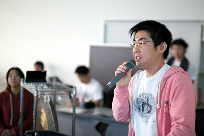
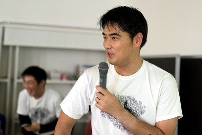

RegionalRubyKaigi レポート (50) TokyuRuby 会議 08
はじめに
TokyuRuby 会議 08 は、東京での RegionalRuby 会議として、2014 年 11 月 29 日に開催されました。
本記事はその様子をレポートしたものです。

開催概要
- 開催日
- 2014-11-29 (土) 9:30 - 19:30
- 開催場所
- 株式会社 VOYAGE GROUP 様 会議室
- 主催
- Tokyu.rb
- 参加者
- およそ 80 名
- 公式ページ
- http://regional.rubykaigi.org/tokyu08
- 公式ハッシュタグ
- #tqrk08
TokyuRuby 会議とは
TokyuRuby 会議は、Ruby に興味のあるエンジニアが集うTokyu.rb が主催する LT 大会です。
第一回からの特徴として、
- 「お酒・食べ物の持ち寄り」
- 「その場で参加者から抽選でLT発表者を選出する」
- 「基調講演は当日の投票で選ぶ」
などがあります。
今回 08 では初の試みとして、午前中から実働 8 時間 LT 大会として開催されました。
LT 大会の様子
受付
いつもの TokyuRuby 会議は、午後からなのですが、今回は勤務時間のような受付開始時刻は 9:30 〜・・・
みなさんの出足は少し鈍かったようですが、開始時刻が近づくにつれてLT発表者、参加者が続々といらしてくださいました。
開場〜挨拶

- 実行委員長からの諸注意等と挨拶の後、終焉を告げる者の募集がありました。
- (5 分間の銅鑼を使ったタイマー係)
- 今回は、参加者のみなさんで持ち寄ったお酒で乾杯！

LT
いつもは前半戦、後半戦なのですが、長丁場である今回は、午前を二部、午後を三部にわけて行なわれました。
実働 8 時間の長丁場ということで、たくさんの方に LT 登壇をしていただきました。
すべての LT をご紹介したいのですが、今回は LT 枠が多いため、普段自重している実行委員による LT がいくつかありました。
今回のるびまでは、そちらにフォーカスしてご紹介します。

実行委員のトップバッターとして、
いがいが(五十嵐邦明)「そろそろ TDD について一言いっておくか」
TDD といっても、「tmix driven development」
TokyuRuby 会議 08 の T シャツスポンサーである spice life 社のサービス tmix のご紹介。
なんと、永田町にも T シャツを届けられるサービスなんですよ！
とのこと。
また、社員の皆さんは、tmix 製の T シャツを着てお仕事をされているそうです。
: 
つづいて、二番手の実行委員は 07 では実行委員長を務めた
tatsuoSakurai(櫻井達生)による「KPT@home」
Rubyistが家でもKPTを取り入れてみたというお話
ありがとう、ごめんなさい、が言いやすい
予定を共有しやすい
そして、その成果としてできたものが__「万葉への路(神保町オフィスへの行き方の案内)」__
初めて株式会社万葉さんへいらっしゃる方も安心ですね！

午前の最後には、
沢田正 (@cesare)「会社員→フリーランス→経営者→会社員 (予) だけど質問ある？」
沢田さんの、これまでの道のりについて始まり、チームプレイのほうが性に合っているということで会社員 (予) へとのこと。
: 
午後に入ると、参加者の酔いもピークになりかけているころ、いつものこれまでの TokyuRuby 会議なら、まだ始まる時間ということに気がつき、実働 8 時間の長さを実感していました。
まだまだ折り返したばかりのところで、TokyuRuby 会議 08 の実行委員長である @ginkouno の
河野 誠「MDD」
__MDD__とは、何ドリブンデベロップメント？果たして正解は何なのか？
LT が終了するまでに正解をツイートした方になんと賞品にお肉柄のクッションをプレゼント！
わりとミスリード気味なヒントが小出しででてくる LT でした。
残念ながら見事正解された方はおらず、賞品は LT 王への賞品となりました。
そして、実行委員の最後として、
@publichtml 「私とRubyと彼氏(仮)」
__(仮)__はタイトルに対してではなく「彼氏」についての仮。
始まるや否や「彼氏」改め「旦那」に変えられ、あっという間にスライドは終了
そして、「ライブリリースノーティング＆プロダクト名(名字)変更します！」と Facebook が開かれ交際ステータスを「既婚」に変えるパフォーマンスにどよめく会場
非常におめでたい雰囲気の中、プロダクト名変更に手間取ってしまったところで無情の銅鑼！
今回は珍しく実行委員が LT をしていたこともあり、そちらにフォーカスを当てさせてもらいましたが、
他にもたくさん素晴らしい LT をしていただきましたので、タイトルだけではございますが、どのようなものがあったかは公式ページをご参照ください。
抽選 LT
TokyuRuby 会議ではおなじみの抽選 LT です。LT 発表者ではない一般参加者の中から抽選を行い、発表をしてもらう LT です。
今回は、午前と午後で 2 回行なわれました。
1 回目
午前中ということもあり一般参加者は 1/4 程度の人数だったので、抽選を行うけれども選ばれた 1 名を除いて、み〜んな発表という抽選が行われました。
(一般参加者 11 名のうち 10 名の方に発表していだきました。)
2回目
1回目で発表された 10 名を除いた一般参加者に挙手していただいて、抽選をと思ったのですが、時間にも余裕があったこともありそのまま全員当選 8 名全員に発表していただくことになりました。
抽選 LT なのにハズレなし！でした。
投票結果

酒王
- @tagomoris さん

たくさんの種類の素敵なお酒を持ってきていただき、基調講演では Ruby Conf サンディエゴに行かれた際の食べ物とお酒のお話をしてくださいました。
そちらで仕入れたフルーツワインが獲得票を延ばしたのかもしれないですね！
飯王

@NEKOTENI さん
LT「 Rails マダムへの道」の参加者の食いつき具合から、反響が一層増したのかもしれません！
「低糖質の食べ物」
人生初 LT 後からの、初参戦で飯王となりました！
基調講演では、「(前回の飯王)カッパさんごめんなさい。」で始まり、低糖質のご飯を作るにあたって、何を参考にしてきたのか、次回の TokyuRuby 会議の参戦目標について等、お話していただきました。
LT 王
: 
@publichtml さん
入籍後の絶妙なタイミングでの TokyuRuby 会議ということもあり、
「自分の人生を捧げる覚悟で LT 王を取りに行く」意気込みで「弱者なら弱者なりの戦いがある」という使えるものは何でも使う！ということをやってのけて初 LT 挑戦での、 LT 王。
もちろん狙っていたとのこと。おめでとうございます！
TokyuRuby 会議を支える○○
飯
TokyuRuby 会議では恒例の飯 (お持ち寄り料理) も、これまで以上にたくさんお持ち寄りいただきました。
飯王
飯王とは、TokyuRuby 会議 03 からはじまった、お持ち寄り料理に参加者が投票を行い、一番票を集めた参加者に贈られる TokyuRuby 会議の称号です。
酒
今回はプレモルスポンサーのサントリーさんがいないこともあり、様々な美味しいお酒が持ち寄りされました。
酒王
酒王とは、TokyuRuby 会議 04 以来久しぶりの酒王。飯王と同じく参加者に持ち寄っていただいたお酒に投票を行い、一番票を集めた参加者に贈られる TokyuRuby 会議の称号です。
LT
LT 王
LT 王とは、発表された LT の中から投票を行い、一番票を集めた LT を発表した人に贈られる TokyuRuby 会議の称号です。
スタッフ T シャツ
TokyuRubyKaigi07 から引き続き、今回も @yucao24hours さんにデザインしてもらいました。
今回の T シャツデザインは tmix さんのサイトにて公開されています。

[ NEW ] 投票システム
 これまで、LT 王、飯王を決める投票は、ホワイトボードでカウントしていましたが、今回からは、PC 、スマフォから、コメント付きで投票ができるシステムが導入されました。
これまで、LT 王、飯王を決める投票は、ホワイトボードでカウントしていましたが、今回からは、PC 、スマフォから、コメント付きで投票ができるシステムが導入されました。
[ NEW ] 樽酒スポンサー

株式会社 万葉 様
TokyuRuby 会議、念願の「鏡開き」のために、樽酒( 1.8L )を提供していただきました！
鏡開き前には「樽酒スポンサーセッション」もありました。
働き方についてのお話や、お客さんも巻き込んで伝搬させる万葉文化といった素敵なお話もあり、
部活の方も、ボドゲ部、打撃部もあるとのこと。
他にも、
- 表計算ソフトは、表計算のために使っています！
- 技術者PM営業募集中
- エア社員も募集しています。
- とのことでした。

会場スポンサー
株式会社 VOYAGE GROUP 様
いつも使わせていただいている大きな銅鑼、飲食もできるステキな会場と、休憩の出来る和室、アルコール・フリードリンクのご提供などなど、いつもありがとうございます。
さらに、長丁場で行われた終盤戦には、ピュアな水の提供までしていただき、酒王候補に追加しても良いのではないかと思えるくらい、多くの参加者の喉を潤わしてくださりました。
TokyuRuby 会議実行委員長システム
TokyuRuby 会議 07 では実行委員長は @tatsuoSakurai でしたが、
TokyuRuby 会議 08 では @ginkouno が実行委員長として開催されました。
負荷分散できたことで、2014 年 2 回目となる TokyuRuby 会議 08 が開催ができました。
次回の 09 は @yukaina が担当です:)
まとめ

実働8時間という長丁場でしたが、いざ終わってみると、あっという間に過ぎ去った一日でした。
それにしても、LT 登壇者だけでなく参加者のほとんどの方に LT をしていただき、これまで以上に、たくさんのお話が聞けたのではないでしょうか。
そのような激戦にも関わらず、人生をネタに捧げた実行委員( @publichtml )が LT 王をとってしまうという展開に申し訳ないと思いつつも、めでたいことでしたのでお許しください。
個人的な感想としましては、同じ 8 時間でもこんなにも楽しく幸せに過ごせた一日は、そうそう滅多に出会わない一生の思い出に残る一日となりました。
また、参加者の皆さんの楽しそうな酔っぱらい具合を思い出しながら振返ってみて、TokyuRuby 会議の実行委員の一員として参加出来たことは、ほんとうに良かったと思える会議となりました。
参加してくださった皆様、お祝いの言葉を掛けてくださった皆様ありがとうございました。
Tokyu.rb とは
2 ヶ月に 1 度位、目黒でしゃぶしゃぶかすきやきを食べる Rubyist の集団。
お酒持ち込みのハッカソンも開催予定。 東急沿線でなくとも乗り入れ線沿線や、職場が沿線だったりする方も、全く関係が無い方も誰でも参加可能です。お気軽に Facebook グループよりお越しください。
当レポートは、@koichiroo と @igaiga555 撮影の写真（@koichiroo さんの写真、@igaiga555 さんの写真 ）を使ってます。
他にもたくさんの TokyuRuby 会議 08 の写真が掲載されています。よろしかったらご覧下さい。
著者について
三浦 美咲樹 ( @yukaina )
 TokyuRuby 会議 08 抽選 & 受付係。
TokyuRuby 会議 08 抽選 & 受付係。
普段は Ruby on Rails でストックフォトサイトの開発しています。
嫁が今回の LT 王( @publichtml )になりました。